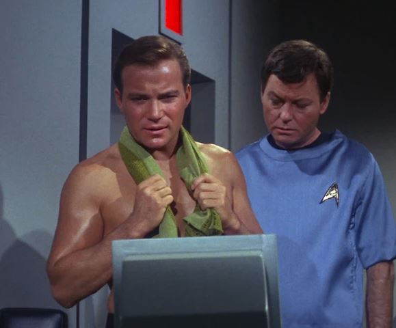
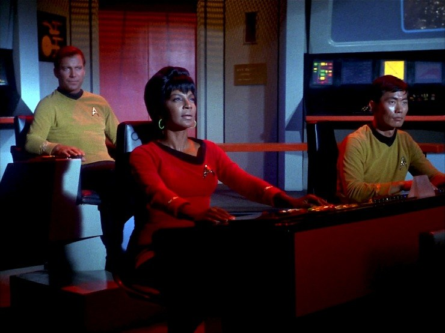
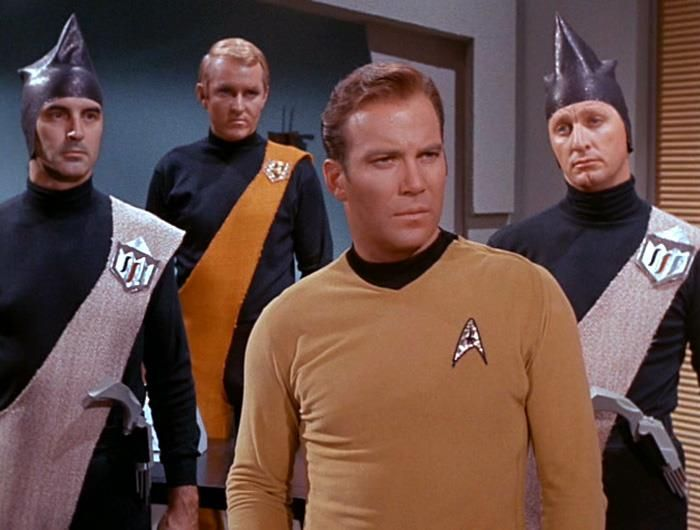

Adventures
The Corbomite Maneuver
What to do when you encounter an enemy far more powerful than yourself? Do you bluff? Do you engage in trickery? I found out during the Corbomite Maneuver, because a vastly powerful starship attacked the USS Enterprise.
Balance of Terror
Decision making is part of being a captain, and during the Balance of Terror, I had to determine what to do when a Romulan ship made a "destructively hostile armed probe of Federation territory."
A Taste of Armageddon
What a time this was! I had work with Spock to save my crew when they were "declared all killed in action in bizarre computer simulated war where the actual deaths must occur to continue." Also, you don't get to see hats like these everyday, do you? Unless you work with me, I doubt it.